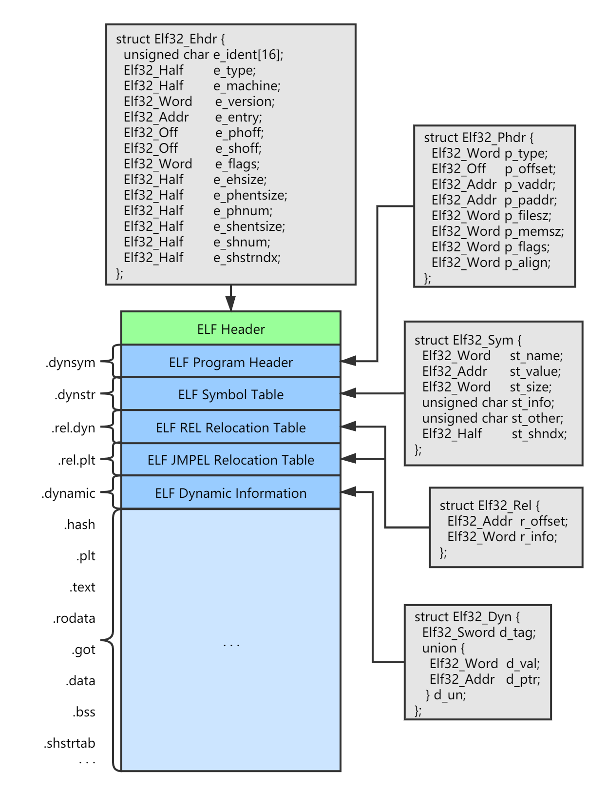

前言 ELF 是一种可执行文件的格式，全称是 Executable and Linkable Format，即可执行和链接格式，它是 Unix/Linux 系统下的二进制文件的标准格式，与之对应的是 Windows 系统的 PE（Portable Executable）可执行文件格式，它们都是由 COFF（Common Object File Format，通用对象文件格式）文件格式发展而来。
so 文件是 Unix/Linux 系统中的动态库文件，被称为共享目标文件（Shared Object File），后缀名为 .so，它是 ELF 的一种，另外属于 ELF 类型的还有可重定位文件（Relocatable File）以及核心转储文件（Core Dump File）。
ELF 文件类型
说明
实例
可重定位文件（Relocatable File）
这类文件包含了代码和数据，可以被用来链接成可执行文件或共享目标文件，静态链接库也可以归为这一类
Linux 的 .o；Windows 的 .obj
共享目标文件（Shared Object File）
这种文件包含了代码和数据，可以在以下两种情况中使用，一种是链接器可以使用这种文件跟其他的可重定位文件和共享目标文件链接，产生新的目标文件，第二种是动态连接器可以将几个这种共享目标文件与可执行文件结合，作为进程映像的一部分来运行
Linux 的 .so，如 /lib/glibc-2.5.so，Windows 的 DLL
核心转储文件（Core Dump File）
当进程意外终止时，系统可以将该进程的地址空间的内容及终止时的一些其他信息转储到核心转储文件
Linux 下的 Core Dump
Android 是基于 Linux 内核开发的操作系统，所以 Android 平台上的可执行文件格式和 Unix/Linux 是一致的。
下面以 Android 平台下的 so 文件为例子对 ELF 这种文件格式进行解析。
生成 so 文件 为了对 so 文件进行解析，首先需要生成一个 so 文件。
NDK 开发可参考：Android NDK 指南
首先建立一个最基本的 NDK 开发工程，创建 Java 类 NativeHandler：
1 2 3 4 5 6 7 8 9 10 package io.l0neman.nativetproject;public class NativeHandler static { System.loadLibrary("foo" ); } public static native String getHello () }
编写 C++ 代码文件，为了稍微显得没有那么简单，加入一些变量和简单函数：
1 2 3 4 5 6 7 8 9 10 11 #ifndef NATIVETPROJECT_FOO_H #define NATIVETPROJECT_FOO_H #include <jni.h> extern "C" {JNIEXPORT jstring JNICALL Java_io_l0neman_nativetproject_NativeHandler_getHello (JNIEnv *env, jclass clazz) } #endif
1 2 3 4 5 6 7 8 9 10 11 12 13 14 15 16 17 18 19 20 21 22 23 24 25 26 27 28 #include "foo.h" #include <cstdio> #include <jni.h> int global_init_var = 84 ;int global_uninit_var;void func1 (int i) printf ("%d" , i); } int test () static int static_var = 85 ; static int static_var2; int a = 1 ; int b; func1 (static_var + static_var2 + a + b); return a; } extern "C" {jstring Java_io_l0neman_nativetproject_NativeHandler_getHello (JNIEnv *env, jclass clazz) { test (); return env->NewStringUTF ("hello" ); } }
mk 文件：
1 2 3 # Application.mk APP_ABI := armeabi-v7a arm64-v8a APP_OPTIM := release
1 2 3 4 5 6 7 8 9 10 11 # Android.mk LOCAL_PATH := $(call my-dir) include $(CLEAR_VARS) LOCAL_MODULE := foo LOCAL_SRC_FILES := foo.cpp LOCAL_CFLAGS := -g include $(BUILD_SHARED_LIBRARY)
这些文件在 src/main/jni 目录中，进入 jni 目录，然后执行 ndk-build 命令，将编译出 armeabi-v7a 和 arm64-v8a 架构的 libfoo.so 文件，它们的位置在 src/main/jni/libs/armxxx/libfoo.so。
有了文件，下面开始进行解析。
相关工具 在解析之前介绍两个用于解析 ELF 文件的工具，它们通常是 Linux 系统中自带的软件，可直接使用。
如果想要在 Windows 系统中使用，推荐使用 Windows 子系统（Windows Subsystem for Linux）。
objdump 可解析目标文件的工具，可显示 ELF 文件的概要信息。常用选项如下：
1 2 3 4 5 6 7 8 9 -h 显示所有节的信息 -x 显示所有节的内容 -d 显示可执行节的汇编程序内容 -D --disassemble-all 显示所有节的汇编程序内容 -s --full-contents 显示所有节内容 -t --syms 显示符号表的内容 -T --dynamic-syms 显示动态符号表的内容 -r --reloc 显示文件中的重定位条目 -R --dynamic-reloc 显示文件中的动态重定位条目
readelf 用于解析 ELF 文件的工具，可以详细的输出 ELF 文件的信息。常用选项如下：
1 2 3 4 5 6 7 8 9 -a 等效于：-h -l -S -s -r -d -V -A -I -h --file-header 显示 ELF 文件头 -l --program-headers 显示程序头 -s --syms 显示符号表 --dyn-syms 显示动态符号表 -n --notes 显示核心注释 -r --relocs 显示重定位 -u --unwind 显示展开信息 -d --dynamic 显示动态部分
在下面的解析过程中，可使用这两个工具对解析结果进行参考和对照。
整体结构图 
上图反映了一个 ELF 文件的典型结构，首先是一个 ELF 文件的头结构，根据 ELF 所支持的目标执行平台不同，分为 32 位和 64 位的 ELF 文件，32 位 ELF 文件的头结构使用一个 Elf32_Ehdr 结构体描述，ELF 头结构描述了整个 ELF 文件的属性，包括文件类型（可执行文件、可重定位、共享目标文件等）、虚拟入口地址、段表偏移、文件本身的大小等。
文件头下面的就是 ELF 文件的主要内容了，ELF 文件由若干个段（Section）组成，它们的结构各不相同，在 ELF 文件中扮演不同的角色，有各自的分工。通常 ELF 文件包含若干遵循 ELF 结构规范的段。如上图所示，左边带有 . 前缀的为段名，上面几个深蓝色的矩形为 ELF 文件标准结构，它们有明确的结构定义，在 Android 9.0 系统源代码中，可在 art/runtime/elf.h 文件中找到它们对应的定义，在下面的分析中会一一解释它们的含义。
除了具有标准结构的 ELF 段，还有一些常用段以及程序自定义段名的段。下面列举一些常用段的含义：
段名
说明
.rodata
Read only Data，存放的是只读数据，比如字符串、全局 const 变量等
.comment
存放编译器版本信息，例如 GCC:(GNU)4.2.0
.debug
调试信息
.dynamic
动态链接信息
.hash
符号哈希表
.line
调试时的行号表，即源代码与行号与编译后指令的对应表
.notes
额外的编译器信息，比如程序的公司名、发布版本等
.strtab
String Table，字符串表，用于存储 ELF 文件中用到的字符串
.symtab
Symbol Table，符号表，存放 ELF 文件的内部符号
.shstrtab
Section String Table，段名字符串表
.plt
动态链接的跳转表和全局入口表
.init
程序初始化终结代码段
.interp
存放动态链接器路径
.text
代码段，存放机器指令，是 ELF 文件的主要内容
.bss
为未初始化的全局变量和局部静态变量预留位置，没有内容，不占空间
.data
数据段，存全局变量和局部静态变量
.dynstr
动态符号字符串表
对于任意的 ELF 文件，它的结构可能不会像上面图中一样完整，根据实际情况，编译器编译生成的 ELF 文件会根据实际代码来增加或减少相应的段，顺序也可能和上图不同，但 ELF 文件的头部结构和那几个标准格式段的结构是一致的。
头部结构 首先是 ELF 文件的头部结构，32 位 ELF 文件的头部结构定义如下：
1 2 3 4 5 6 7 8 9 10 11 12 13 14 15 16 17 18 19 20 21 22 23 24 typedef uint32_t Elf32_Addr; typedef uint32_t Elf32_Off; typedef uint16_t Elf32_Half;typedef uint32_t Elf32_Word;typedef int32_t Elf32_Sword;EI_NIDENT = 16 struct Elf32_Ehdr { unsigned char e_ident[EI_NIDENT]; Elf32_Half e_type; Elf32_Half e_machine; Elf32_Word e_version; Elf32_Addr e_entry; Elf32_Off e_phoff; Elf32_Off e_shoff; Elf32_Word e_flags; Elf32_Half e_ehsize; Elf32_Half e_phentsize; Elf32_Half e_phnum; Elf32_Half e_shentsize; Elf32_Half e_shnum; Elf32_Half e_shstrndx; };
e_ident 是文件标识字段，也就是魔数，32 位 ELF 文件的文件标识为 16 个字节，每个字节含义如下：
1 2 3 4 5 6 7 8 7f 45 4c 46 01 01 01 00 00 00 00 00 00 00 00 00 ^ ^ ^ ^ ^ ^ E L F | | / \ [ ELF 文件类型 ] [ 字节序 ] 0 无效文件 0 无效格式 1 32 位 ELF 文件 1 小端格式 2 64 位 ELF 文件 2 大端格式
e_type 成员表示 ELF 文件类型，系统通过这个常量来判断 ELF 文件类型，而不是文件扩展名。
常量
值
含义
ET_NONE
0
无类型
ET_REL
1
可重定位文件，一般为 .o 文件
ET_EXEC
2
可执行文件
ET_DYN
3
共享目标文件，一般为 .so 文件
ET_CORE
4
核心文件
ELF 文件被设计成可以在多个平台下使用，但并不表示同一个 ELF 文件可以在不同的平台下使用，而是表示不同平台下的 ELF 文件都遵循同一套 ELF 标准。e_machine 成员就表示该属性。
相关常量以“EM”开头，例如：
常量
值
含义
EM_M32
1
AT&T WE 32100
EM_SPARC
2
SPARC
EM_386
3
Intel x86
EM_68K
4
Motorola 68000
EM_88K
5
Motorola 88000
EM_860
6
Intel 80860
…
完整列表可以参考 elf.h 文件中的相关常量定义。
ELF 文件头结构中其他字段上面的注释中已经能够说明对应的含义，部分字段描述了子结构的偏移，包括 Program Header 表和 Section Header 表以及字符串表，这个在解析对应的结构时会用到。
使用 readelf 工具解析 armeabi-v7a/libfoo.so 头结构结果如下：
1 2 3 4 5 6 7 8 9 10 11 12 13 14 15 16 17 18 19 20 ELF Header: Magic: 7f 45 4c 46 01 01 01 00 00 00 00 00 00 00 00 00 Class: ELF32 Data: 2's complement, little endian Version: 1 (current) OS/ABI: UNIX - System V ABI Version: 0 Type: DYN (Shared object file) Machine: ARM Version: 0x1 Entry point address: 0x0 Start of program headers: 52 (bytes into file) Start of section headers: 12920 (bytes into file) Flags: 0x5000200, Version5 EABI, soft-float ABI Size of this header: 52 (bytes) Size of program headers: 32 (bytes) Number of program headers: 8 Size of section headers: 40 (bytes) Number of section headers: 27 Section header string table index: 26
段表结构 段表由 Elf32_Shdr 结构体数组描述，每个 Elf32_Shdr 描述一个段。
段表的描述结构体数组在文件中的偏移存放在 ELF 文件头中的 e_shoff 字段中，e_shentsize 和 e_shnum 字字段分别为数组的大小和数量。
1 2 3 4 5 6 7 8 9 10 11 12 struct Elf32_Shdr { Elf32_Word sh_name; Elf32_Word sh_type; Elf32_Word sh_flags; Elf32_Addr sh_addr; Elf32_Off sh_offset; Elf32_Word sh_size; Elf32_Word sh_link; Elf32_Word sh_info; Elf32_Word sh_addralign; Elf32_Word sh_entsize; };
段的名字只在编译和链接过程中有意义，无法真正表示段的类型，决定段的属性和类型的是段的类型（sh_type）和段的属性（sh_flag）
段类型的相关常量以 SHT 开头，例如：
常量
值
含义
SHT_NULL
0
无效段
SHT_PROGBITS
1
程序段、代码段、数据段都是这种类型
SHT_SYMTAB
2
表示该段的内容为符号表
SHT_STRTAB
3
表示该段的内容为字符串表
SHT_RELA
4
重定位表，该段包含了重定位信息
SHT_HASH
5
符号表的哈希表
SHT_DYNAMIC
6
动态链接信息
SHT_NOTE
7
提示性信息
SHT_NOBITS
8
表示该段在文件中没有内容，比如 .bss 段
SHT_REL
9
该段包含了重定位信息
SHT_SHLIB
10
保留
SHT_DNYSYM
11
动态链接的符号表
…
完整列表可以参考 elf.h 文件中的相关常量定义。
段的标志位表示该段在进程虚拟地址空间中的属性，比如是否可写，是否可执行等。
常见值如下：
常量
值
含义
SHF_WRITE
0x1
表示该段在进程空间中可写
SHF_ALLOC
0x2
表示该段在进程空间中需要分配空间。有些包含指示或者控制信息的段不需要在进程空间中被分配空间，它们一般不会有这个标志。像代码段、数据段和 .bss 段一般都会有这个标志位
SHF_EXECINSTR
0x4
表示该段在进程空间中可以被执行,一般指代码段
…
完整列表可以参考 elf.h 文件中的相关常量定义。
系统保留段相关标志位如下：
Name
sh_type
sh_flags
.bss
SHT_NOBITS
SHF_ALLOC + SHF_WRITE
.comment
SHT_PROGBITS
none
.data
SHT_PROGBITS
SHF_ALLOC + SHF_WRITE
.data1
SHT_PROGBITS
SHF_ALLOC + SHF_WRITE
.debug
SHT_PROGBITS
none
.dynamic
SHT_DYNAMIC
SHF_ALLOC + SHF_WRITE
.hash
SHT_HASH
SHF_ALLOC
.line
SHT_PROGBITS
none
.note
SHT_NOTE
none
.rodata
SHT_PROGBITS
SHF_ALLOC
.rodata1
SHT_PROGBITS
SHF_ALLOC
.shstrtab
SHT_STRTAB
none
.strtab
SHT_STRTAB
如果该 ELF 文件中有可装载的段需要用到该字符串表，那么字符串表也将被装载的到内存空间，则有 SHF_ALLOC 标志位
.symtab
SHT_SYMTAB
同字符串表
.text
SHT_PROGBITS
SHF_ALLOC + SHF_WRITE
段的类型必须是链接相关的（动态或静态），比如重定位表、符号表等。否则这两个成员无意义。
sh_type
sh_link
sh_info
SHT_DYNAMIC
该段所使用的字符串表在段表中的下标
0
SHT_HASH
该段所使用的符号表在段表中的下标
0
SHT_REL
该段所使用的相应符号表在段表中的下标
该重定位表所作用的段在段表中的下标
SHT_SYMTAB
操作系统相关的
操作系统相关的
other
SHN_UNDEF
0
使用 readelf 工具解析 libfoo.so 段表描述结果如下：
1 2 3 4 5 6 7 8 9 10 11 12 13 14 15 16 17 18 19 20 21 22 23 24 25 26 27 28 29 Section Headers: [Nr] Name Type Addr Off Size ES Flg Lk Inf Al [ 0] NULL 00000000 000000 000000 00 0 0 0 [ 1] .note.android.ide NOTE 00000134 000134 000098 00 A 0 0 4 [ 2] .note.gnu.build-i NOTE 000001cc 0001cc 000024 00 A 0 0 4 [ 3] .dynsym DYNSYM 000001f0 0001f0 000350 10 A 4 1 4 [ 4] .dynstr STRTAB 00000540 000540 000373 00 A 0 0 1 [ 5] .gnu.hash GNU_HASH 000008b4 0008b4 00015c 04 A 3 0 4 [ 6] .hash HASH 00000a10 000a10 000170 04 A 3 0 4 [ 7] .gnu.version VERSYM 00000b80 000b80 00006a 02 A 3 0 2 [ 8] .gnu.version_d VERDEF 00000bec 000bec 00001c 00 A 4 1 4 [ 9] .gnu.version_r VERNEED 00000c08 000c08 000040 00 A 4 2 4 [10] .rel.dyn REL 00000c48 000c48 0000c8 08 A 3 0 4 [11] .rel.plt REL 00000d10 000d10 0000f0 08 AI 3 20 4 [12] .plt PROGBITS 00000e00 000e00 00017c 00 AX 0 0 4 [13] .text PROGBITS 00000f7c 000f7c 0016b4 00 AX 0 0 4 [14] .ARM.exidx ARM_EXIDX 00002630 002630 0001a0 08 AL 13 0 4 [15] .ARM.extab PROGBITS 000027d0 0027d0 000180 00 A 0 0 4 [16] .rodata PROGBITS 00002950 002950 000497 01 AMS 0 0 1 [17] .fini_array FINI_ARRAY 00003e08 002e08 000008 04 WA 0 0 4 [18] .data.rel.ro PROGBITS 00003e10 002e10 000048 00 WA 0 0 4 [19] .dynamic DYNAMIC 00003e58 002e58 000110 08 WA 4 0 4 [20] .got PROGBITS 00003f68 002f68 000098 00 WA 0 0 4 [21] .data PROGBITS 00004000 003000 00000c 00 WA 0 0 4 [22] .bss NOBITS 0000400c 00300c 000005 00 WA 0 0 4 [23] .comment PROGBITS 00000000 00300c 000109 01 MS 0 0 1 [24] .note.gnu.gold-ve NOTE 00000000 003118 00001c 00 0 0 4 [25] .ARM.attributes ARM_ATTRIBUTES 00000000 003134 000034 00 0 0 1 [26] .shstrtab STRTAB 00000000 003168 00010f 00 0 0 1
字符串表结构 字符串表存放 ELF 文件内需要被使用的字符串，它是由多个字符串首尾相连组成，是一段连续的字节。
通常一个 ELF 文件包含多个字符串表，存放段名和存放符号名的字符串表不是同一个。
其他 ELF 结构包含字符串时，只需提供一个所属字符串表中的索引值。
下面是 libfoo.so 文件的一个字符串表一部分的 16 进制视图，字符串表的第一个字节是 \0：
1 2 3 4 5 6 7 8 9 00 2E 73 68 73 74 72 74 . s h s t r t 61 62 00 2E 6E 6F 74 65 2E 61 6E 64 72 6F 69 64 a b . n o t e . a n d r o i d 2E 69 64 65 6E 74 00 2E 6E 6F 74 65 2E 67 6E 75 . i d e n t . n o t e . g n u 2E 62 75 69 6C 64 2D 69 64 00 2E 64 79 6E 73 79 . b u i l d - i d . d y n s y 6D 00 2E 64 79 6E 73 74 72 00 2E 67 6E 75 2E 68 m . d y n s t r . g n u . h 61 73 68 00 2E 67 6E 75 2E 76 65 72 73 69 6F 6E a s h . g n u . v e r s i o n 00 2E 67 6E 75 2E 76 65 72 73 69 6F 6E 5F 64 00 . g n u . v e r s i o n _ d 2E 67 6E 75 2E 76 65 72 73 69 6F 6E 5F 72 00 2E . g n u . v e r s i o n _ r . 72 65 6C 2E 64 79 6E 00 2E 72 65 6C 2E 70 6C 74 r e l . d y n . r e l . p l t
使用 readelf 工具解析 libfoo.so 的 .shstrtab 字符串表如下：
1 2 3 4 5 6 7 8 9 10 11 12 13 14 15 16 17 18 19 20 21 22 23 24 25 String dump of section '.shstrtab': [ 1] .shstrtab [ b] .note.android.ident [ 1f] .note.gnu.build-id [ 32] .dynsym [ 3a] .dynstr [ 42] .gnu.hash [ 4c] .gnu.version [ 59] .gnu.version_d [ 68] .gnu.version_r [ 77] .rel.dyn [ 80] .rel.plt [ 89] .text [ 8f] .ARM.exidx [ 9a] .ARM.extab [ a5] .rodata [ ad] .fini_array [ b9] .data.rel.ro [ c6] .dynamic [ cf] .got [ d4] .data [ da] .bss [ df] .comment [ e8] .note.gnu.gold-version [ ff] .ARM.attributes
程序表结构 ELF 文件的段分为两种模式，一种是 ELF 文件被链接之前，就是被加载到内存空间之前，ELF 文件中的段使用 Section 描述，也可以称为 ‘节’；另一种是 ELF 文件被链接后，整个 ELF 文件将被加载到内存中，这时 ELF 文件中的段使用 Segment 描述，程序表就是专门用于保存 Segment 信息的列表，用于初始化链接后的内存中的 Segment。
每个程序表结构使用一个 Elf32_Phdr 结构体描述：
1 2 3 4 5 6 7 8 9 10 struct Elf32_Phdr { Elf32_Word p_type; Elf32_Off p_offset; Elf32_Addr p_vaddr; Elf32_Addr p_paddr; Elf32_Word p_filesz; Elf32_Word p_memsz; Elf32_Word p_flags; Elf32_Word p_align; };
使用 readelf 工具解析 libfoo.so 程序表结果如下：
1 2 3 4 5 6 7 8 9 10 Program Headers: Type Offset VirtAddr PhysAddr FileSiz MemSiz Flg Align PHDR 0x000034 0x00000034 0x00000034 0x00100 0x00100 R 0x4 LOAD 0x000000 0x00000000 0x00000000 0x02de7 0x02de7 R E 0x1000 LOAD 0x002e08 0x00003e08 0x00003e08 0x00204 0x00209 RW 0x1000 DYNAMIC 0x002e58 0x00003e58 0x00003e58 0x00110 0x00110 RW 0x4 NOTE 0x000134 0x00000134 0x00000134 0x000bc 0x000bc R 0x4 GNU_STACK 0x000000 0x00000000 0x00000000 0x00000 0x00000 RW 0x10 EXIDX 0x002630 0x00002630 0x00002630 0x001a0 0x001a0 R 0x4 GNU_RELRO 0x002e08 0x00003e08 0x00003e08 0x001f8 0x001f8 RW 0x4
符号表结构 ELF 文件有一个相应的符号表（Symbol Table），每一个定义的符号有一个对应的值，叫做符号值（Symbol Value），对于函数和变量来说，就是它们的地址。
符号表中的所有符号分为如下几类：
定义在本目标文件的全局符号，可被其他目标文件引用；
定义在本目标文件的全局符号，却没有定义在目标文件，一般叫做外部符号（External Symbol），也就是符号引用，例如“printf”；
段名，这种符号往往由编译器产生，它的值就是该段的起始地址；
局部符号，这种符号只在编译单元内部可见，对于链接过程没有作用，调试器可以使用这些符号来分析程序或崩溃时的核心转储文件；
行号信息，即目标文件指令与源代码中代码行的对应关系，它也是可选的。
符号表存在于 .symtab 段和 .dynsym 段，前者包含 ELF 文件中所有符号，后者包含动态符号（只是动态链接相关的导入导出符号，不包含 ELF 内部符号）。
在使用 NDK 编译 so 文件时，如果以 release 模式编译，会被 strip 工具优化，so 文件将被去除内部符号表，那么就只留下 .dynsym 段。
符号表中每个符号使用 Elf32_Sym 结构体描述：
1 2 3 4 5 6 7 8 struct Elf32_Sym { Elf32_Word st_name; Elf32_Addr st_value; Elf32_Word st_size; unsigned char st_info; unsigned char st_other; Elf32_Half st_shndx; };
该成员低 4 位表示符号的类型（Symbol Type），高 28 位表示符号绑定信息（Symbol Binding）。
符号绑定信息常见值：
宏定义名
值
说明
STB_LOCAL
0
局部符号，对于目标文件的外部不可见
STB_GLOBAL
1
全局符号，外部可见
STB_WEAK
2
弱引用
符号类型常见值：
宏定义名
值
说明
STT_NOTYPE
0
未知类型符号
STT_OBJECT
1
该符号是一个数据对象，比如变量、数组等
STT_FUNC
2
该符号是一个函数或其他可执行代码
STT_SECTION
3
该符号表示一个段，这种符号必须是 STB_LOCAL 的
STT_FILE
4
该符号表示文件名，一般都是该目标文件所对应的源文件名，它一定是 STB_LOCAL 类型的，并且它的 st_shndx 一定是系统 SHN_ABS
如果符号定义在本目标文件中，那么这个成员表示符号所在的段在段表中的下标，如果符号不是定义在本目标文件中，或者对于有些特殊符号，sh_shndx 值为特殊变量。
常见特殊变量如下：
宏定义名
值
说明
SHN_ABS
0xfff1
表示该符号包含了一个绝对的值。比如文件名的符号类型就是这种
SHN_COMMON
0xff2
表示该符号是一个“COMMON 块”类型的符号，一般来说，未初始化的全局符号定义就是这种类型的，比如 SimpleSection.o 里面的 global_uninit_var
SHN_UNDEF
0
表示该符号未定义，这个符号表示该符号在本目标文件中被引用，但是定义在其他目标文件中
有如下几种情况：
在目标文件中，如果是符号的定义并且该符号不是“COMMON 块”类型的，则表示该符号在段中的偏移。即符号所对应的变量或函数位于 sh_shndx 指定的段，偏移 st_value 的位置。
在目标文件中，如果符号是“COMMON 块”类型的，则 st_value 表示该符号的对齐属性。
在可执行文件中，st_value 表示符号的虚拟地址。这个虚拟地址对于动态链接器十分有用。
使用 readelf 工具解析 libfoo.so 符号表结果如下：
1 2 3 4 5 6 7 8 9 10 11 12 13 14 15 16 17 18 19 20 21 22 23 24 25 26 27 28 29 30 31 32 33 34 35 36 37 38 39 40 41 42 43 44 45 46 47 48 49 50 51 52 53 54 55 Symbol table '.dynsym' contains 53 entries: Num: Value Size Type Bind Vis Ndx Name 0: 00000000 0 NOTYPE LOCAL DEFAULT UND 1: 00000000 0 FUNC GLOBAL DEFAULT UND __cxa_atexit@LIBC (2) 2: 00000000 0 FUNC GLOBAL DEFAULT UND __cxa_finalize@LIBC (2) 3: 00000000 0 FUNC GLOBAL DEFAULT UND dladdr@LIBC (3) 4: 00000000 0 FUNC GLOBAL DEFAULT UND snprintf@LIBC (2) 5: 00000000 0 FUNC GLOBAL DEFAULT UND printf@LIBC (2) 6: 00000000 0 OBJECT GLOBAL DEFAULT UND __sF@LIBC (2) 7: 00000000 0 FUNC GLOBAL DEFAULT UND __stack_chk_fail@LIBC (2) 8: 00000000 0 OBJECT GLOBAL DEFAULT UND __stack_chk_guard@LIBC (2) 9: 00000000 0 FUNC GLOBAL DEFAULT UND abort@LIBC (2) 10: 00000000 0 FUNC GLOBAL DEFAULT UND fflush@LIBC (2) 11: 00000000 0 FUNC GLOBAL DEFAULT UND fprintf@LIBC (2) 12: 00000000 0 FUNC GLOBAL DEFAULT UND __aeabi_memclr8 13: 00000000 0 FUNC GLOBAL DEFAULT UND __aeabi_memcpy 14: 00000000 0 FUNC GLOBAL DEFAULT UND __gnu_Unwind_Find_exidx 15: 00001a37 6 FUNC GLOBAL DEFAULT 13 unw_save_vfp_as_X 16: 00000ffd 80 FUNC GLOBAL DEFAULT 13 decode_eht_entry 17: 00001561 8 FUNC GLOBAL DEFAULT 13 __aeabi_unwind_cpp_pr0 18: 00000fdd 32 FUNC GLOBAL DEFAULT 13 Java_io_l0neman_nativetpr 19: 00001599 8 FUNC GLOBAL DEFAULT 13 __aeabi_unwind_cpp_pr1 20: 00001761 2 FUNC GLOBAL DEFAULT 13 _Unwind_Complete 21: 000015a1 8 FUNC GLOBAL DEFAULT 13 __aeabi_unwind_cpp_pr2 22: 00001854 0 FUNC GLOBAL DEFAULT 13 unw_getcontext 23: 00001765 104 FUNC GLOBAL DEFAULT 13 _Unwind_Resume 24: 0000104d 620 FUNC GLOBAL DEFAULT 13 _Unwind_VRS_Interpret 25: 00004004 4 OBJECT GLOBAL DEFAULT 21 global_init_var 26: 000019c3 32 FUNC GLOBAL DEFAULT 13 unw_get_proc_info 27: 00001a2b 12 FUNC GLOBAL DEFAULT 13 unw_is_signal_frame 28: 0000400c 4 OBJECT GLOBAL DEFAULT 22 global_uninit_var 29: 00001411 336 FUNC GLOBAL DEFAULT 13 _Unwind_VRS_Pop 30: 00004008 4 OBJECT GLOBAL DEFAULT 21 unw_local_addr_space 31: 00001981 60 FUNC GLOBAL DEFAULT 13 unw_set_fpreg 32: 000019bd 6 FUNC GLOBAL DEFAULT 13 unw_step 33: 000015a9 160 FUNC GLOBAL DEFAULT 13 _Unwind_RaiseException 34: 000012b9 172 FUNC GLOBAL DEFAULT 13 _Unwind_VRS_Get 35: 000019e5 20 FUNC GLOBAL DEFAULT 13 unw_resume 36: 00001841 18 FUNC GLOBAL DEFAULT 13 __gnu_unwind_frame 37: 00001885 72 FUNC GLOBAL DEFAULT 13 unw_init_local 38: 0000400c 0 NOTYPE GLOBAL DEFAULT ABS __bss_start 39: 00004011 0 NOTYPE GLOBAL DEFAULT ABS _end 40: 00001901 72 FUNC GLOBAL DEFAULT 13 unw_set_reg 41: 00000fd1 12 FUNC GLOBAL DEFAULT 13 _Z4testv 42: 000017cd 52 FUNC GLOBAL DEFAULT 13 _Unwind_GetLanguageSpecif 43: 00001949 56 FUNC GLOBAL DEFAULT 13 unw_get_fpreg 44: 00001365 172 FUNC GLOBAL DEFAULT 13 _Unwind_VRS_Set 45: 0000400c 0 NOTYPE GLOBAL DEFAULT ABS _edata 46: 00001835 12 FUNC GLOBAL DEFAULT 13 _Unwind_DeleteException 47: 00001a19 12 FUNC GLOBAL DEFAULT 13 unw_is_fpreg 48: 000018cd 52 FUNC GLOBAL DEFAULT 13 unw_get_reg 49: 00001a25 6 FUNC GLOBAL DEFAULT 13 unw_regname 50: 00000fc1 16 FUNC GLOBAL DEFAULT 13 _Z5func1i 51: 00001801 52 FUNC GLOBAL DEFAULT 13 _Unwind_GetRegionStart 52: 000019f9 32 FUNC GLOBAL DEFAULT 13 unw_get_proc_name
重定位表结构 如果 ELF 文件中有需要被重定位的地方，例如“.text”段，那么会有一个相对应的“.rel.text”段保存“.text”段的重定位表。
重定位表的每一个元素使用 Elf32_Rel 结构体表示
1 2 3 4 struct Elf32_Rel { Elf32_Addr r_offset; Elf32_Word r_info; };
成员
含义
r_offset
重定位入口的偏移。对于可重定位文件来说，这个值是该可重定位入口所要修正的位置的第一个字节相对于段起始的偏移；对于可执行文件或共享对象文件来说，这个值是该重定位入口所要修正的位置的第一个字节的虚拟地址。
r_info
重定位入口的类型和符号。这个成员的低 8 位表示重定位入口的类型，高 24 位表示重定位入口的符号在符号表中下标。
使用 readelf 工具查看 libfoo.so 中的 rel.dyn 和 rel.plt 重定位表：
1 2 3 4 5 6 7 8 9 10 11 12 13 14 15 16 17 18 19 20 21 22 23 24 25 26 27 28 29 30 31 32 33 34 35 36 37 38 39 40 41 42 43 44 45 46 47 48 49 50 51 52 53 54 55 56 57 58 59 60 Relocation section '.rel.dyn' at offset 0xc48 contains 25 entries: Offset Info Type Sym.Value Sym. Name 00003e08 00000017 R_ARM_RELATIVE 00003e0c 00000017 R_ARM_RELATIVE 00003e18 00000017 R_ARM_RELATIVE 00003e1c 00000017 R_ARM_RELATIVE 00003e20 00000017 R_ARM_RELATIVE 00003e24 00000017 R_ARM_RELATIVE 00003e28 00000017 R_ARM_RELATIVE 00003e2c 00000017 R_ARM_RELATIVE 00003e30 00000017 R_ARM_RELATIVE 00003e34 00000017 R_ARM_RELATIVE 00003e38 00000017 R_ARM_RELATIVE 00003e3c 00000017 R_ARM_RELATIVE 00003e40 00000017 R_ARM_RELATIVE 00003e44 00000017 R_ARM_RELATIVE 00003e48 00000017 R_ARM_RELATIVE 00003e4c 00000017 R_ARM_RELATIVE 00003e50 00000017 R_ARM_RELATIVE 00003e54 00000017 R_ARM_RELATIVE 00004000 00000017 R_ARM_RELATIVE 00004008 00000017 R_ARM_RELATIVE 00003f6c 00000615 R_ARM_GLOB_DAT 00000000 __sF@LIBC 00003f68 00000815 R_ARM_GLOB_DAT 00000000 __stack_chk_guard@LIBC 00003f74 00001115 R_ARM_GLOB_DAT 00001561 __aeabi_unwind_cpp_pr0 00003f70 00001315 R_ARM_GLOB_DAT 00001599 __aeabi_unwind_cpp_pr1 00003f78 00001515 R_ARM_GLOB_DAT 000015a1 __aeabi_unwind_cpp_pr2 Relocation section '.rel.plt' at offset 0xd10 contains 30 entries: Offset Info Type Sym.Value Sym. Name 00003f88 00000216 R_ARM_JUMP_SLOT 00000000 __cxa_finalize@LIBC 00003f8c 00000116 R_ARM_JUMP_SLOT 00000000 __cxa_atexit@LIBC 00003f90 00000516 R_ARM_JUMP_SLOT 00000000 printf@LIBC 00003f94 00003216 R_ARM_JUMP_SLOT 00000fc1 _Z5func1i 00003f98 00002916 R_ARM_JUMP_SLOT 00000fd1 _Z4testv 00003f9c 00003016 R_ARM_JUMP_SLOT 000018cd unw_get_reg 00003fa0 00001d16 R_ARM_JUMP_SLOT 00001411 _Unwind_VRS_Pop 00003fa4 00002816 R_ARM_JUMP_SLOT 00001901 unw_set_reg 00003fa8 00002216 R_ARM_JUMP_SLOT 000012b9 _Unwind_VRS_Get 00003fac 00000716 R_ARM_JUMP_SLOT 00000000 __stack_chk_fail@LIBC 00003fb0 00000f16 R_ARM_JUMP_SLOT 00001a37 unw_save_vfp_as_X 00003fb4 00002b16 R_ARM_JUMP_SLOT 00001949 unw_get_fpreg 00003fb8 00000b16 R_ARM_JUMP_SLOT 00000000 fprintf@LIBC 00003fbc 00000a16 R_ARM_JUMP_SLOT 00000000 fflush@LIBC 00003fc0 00000916 R_ARM_JUMP_SLOT 00000000 abort@LIBC 00003fc4 00001f16 R_ARM_JUMP_SLOT 00001981 unw_set_fpreg 00003fc8 00002c16 R_ARM_JUMP_SLOT 00001365 _Unwind_VRS_Set 00003fcc 00002a16 R_ARM_JUMP_SLOT 000017cd _Unwind_GetLanguageSpe 00003fd0 00002016 R_ARM_JUMP_SLOT 000019bd unw_step 00003fd4 00001616 R_ARM_JUMP_SLOT 00001854 unw_getcontext 00003fd8 00002516 R_ARM_JUMP_SLOT 00001885 unw_init_local 00003fdc 00001a16 R_ARM_JUMP_SLOT 000019c3 unw_get_proc_info 00003fe0 00002316 R_ARM_JUMP_SLOT 000019e5 unw_resume 00003fe4 00000d16 R_ARM_JUMP_SLOT 00000000 __aeabi_memcpy 00003fe8 00000c16 R_ARM_JUMP_SLOT 00000000 __aeabi_memclr8 00003fec 00001016 R_ARM_JUMP_SLOT 00000ffd decode_eht_entry 00003ff0 00001816 R_ARM_JUMP_SLOT 0000104d _Unwind_VRS_Interpret 00003ff4 00000316 R_ARM_JUMP_SLOT 00000000 dladdr@LIBC 00003ff8 00000416 R_ARM_JUMP_SLOT 00000000 snprintf@LIBC 00003ffc 00000e16 R_ARM_JUMP_SLOT 00000000 __gnu_Unwind_Find_exid
其他结构 上面是 ELF 文件的标准段，它们具有标准的结构定义，下面是一些其他常见段的作用和内容。
代码段，.text 段用于存放编译出来的机器代码指令。
下面是 libfoo.so 中 Java_io_l0neman_nativetproject_NativeHandler_getHello 函数在 .text 段中的内容：
1 2 3 4 5 6 7 8 9 10 11 12 13 地址 16 进制值 汇编指令 .text:00000FDC D0 B5 PUSH {R4,R6,R7,LR} .text:00000FDE 02 AF ADD R7, SP, #8 .text:00000FE0 04 46 MOV R4, R0 .text:00000FE2 FF F7 30 EF BLX j__Z4testv ; test(void) .text:00000FE6 20 68 LDR R0, [R4] .text:00000FE8 03 49 LDR R1, =(aHello - 0xFF2) .text:00000FEA D0 F8 9C 22 LDR.W R2, [R0,#0x29C] .text:00000FEE 79 44 ADD R1, PC ; "hello" .text:00000FF0 20 46 MOV R0, R4 .text:00000FF2 BD E8 D0 40 POP.W {R4,R6,R7,LR} .text:00000FF6 10 47 BX R2
GOT 是 ELF 文件中的全局偏移表（Global Offset Table，GOT），用于存放全局符号地址。
在动态链接的情况下，对于横跨不同模块的全局符号地址要等到模块装载时才能确认，为了实现地址无关代码（PIC，Position-independent Code），需要将符号地址放入数据段，建立一个存放这些全局符号的数组结构，就是 GOT 结构，代码中访问这些全局符号的地址将是在 GOT 结构中的偏移，等到装载完毕，这些符号地址被确认后会被填入 GOT 中，此时代码执行时通过 GOT 表中对应符号的偏移即可获取对应符号的地址，此时代码段可被多个进程共享，从而实现地址无关代码。
下面是截取 libfoo.so 文件 .got 段中的内容：
1 2 3 4 5 6 地址 16 进制值 符号 汇编指令 .got:00003FB8 3C 40 00 00 fprintf_ptr DCD __imp_fprintf .got:00003FBC 38 40 00 00 fflush_ptr DCD __imp_fflush .got:00003FC0 34 40 00 00 abort_ptr DCD __imp_abort .got:00003FC4 81 19 00 00 unw_set_fpreg_ptr DCD unw_set_fpreg+1
.plt 是用于存放 PLT 的代码项表，PLT（Procedure Linkage Table）是一种用于实现延迟绑定（Lazy Binding）的方法。
为了提高动态链接重定位的效率，避免将所有函数地址一次性重定位，ELF 采用了延迟绑定的做法，就是当函数第一次被用到时才进行绑定（符号查找和重定位），.plt 段就是为了存放每个全局函数处理延迟绑定的一段代码。
ELF 将 GOT 拆分成了两个表，叫做 .got 和 .got.plt，其中 .got 用来保存全局变量引用的地址，.got.plt 用来保存全局函数的引用。
.got.plt 的前三项具有特殊含义：
第一项保存的是 .dynamic 段的地址，这个段描述了本模块动态链接相关的信息；
第二项保存的是本模块的 ID；
第三项保存的是 _dl_runtime_resolve() 的地址。
解析代码 到这里完成了 ELF 文件结构的分析，下面使用 C++ 代码对上述主要结构进行手动解析。
定义 ElfParser 类，支持 32 位和 64 位的 ELF 文件解析：
1 2 3 4 5 6 7 8 9 10 11 12 13 14 15 16 17 18 19 20 21 22 23 24 25 26 27 28 29 30 31 32 33 34 35 36 37 38 39 40 41 42 43 44 45 class ElfParser { public : ElfParser (); explicit ElfParser (char const * elf_file) ~ElfParser (); void parse () private : FILE* elf_file_; uint8_t elf_bit_; Elf32_Ehdr elf_header32_{}; Elf64_Ehdr elf_header64_{}; Elf32_Phdr* program_header32_list_; Elf64_Phdr* program_header64_list_; Elf32_Shdr* section_header32_list_; Elf64_Shdr* section_header64_list_; char * string_table_; char * symbol_string_table_; Elf32_Sym* symbol32_list_; Elf64_Sym* symbol64_list_; Elf32_Rel* relocation32_list_; Elf64_Rel* relocation64_list_; bool check_elf () void parse_elf_header () void parse_section_header_list () void parse_string_table () void print_section_header_list () const void parse_symbol_string_table () void parse_program_header_list () void parse_section_list () void parse_symbol_table (long offset, size_t size) void parse_relocation_table (long offset, size_t size) const char * get_string_from_string_table (size_t offset) const const char * get_string_from_symbol_string_table (size_t offset) const }; #endif
打开 ELF 文件 首先打开 ELF 文件，将文件指针保存起来用于解析其他结构。
1 2 3 4 5 6 7 8 9 ElfParser::ElfParser (char const * elf_file) { const auto f = fopen_s (&this ->elf_file_, elf_file, "rb" ); printf ("open elf file: %s\n\n" , elf_file); if (f != 0 || this ->elf_file_ == nullptr ) printf ("open elf file error: %s\n" , elf_file); }
检查 ELF 文件 通过对比 ELF 魔数，检查是否为 ELF 格式，同时了解 ELF 位数以及大小段：
1 2 3 4 5 6 7 8 9 10 11 12 13 14 15 16 17 18 19 20 21 22 23 24 25 26 27 28 29 30 31 32 33 34 35 36 37 38 39 40 41 42 43 44 45 46 47 48 49 50 51 52 53 54 55 56 static constexpr char ElfMagic[] = { 0x7f , 'E' , 'L' , 'F' , '\0' };bool ElfParser::check_elf () unsigned char elf_ident[16 ] = { 0 }; if (0 == fread (elf_ident, sizeof char ), 16 , this ->elf_file_)) { printf ("check elf error: read error" ); return false ; } if (memcmp (elf_ident, ElfMagic, strlen (ElfMagic)) != 0 ) return false ; char elf_type[10 ] = "ERROR" ; switch 4 ]) { case ELFCLASSNONE: strcpy_s (elf_type, "invalid" ); break ; case ELFCLASS32: strcpy_s (elf_type, "ELF32" ); this ->elf_bit_ = 32 ; break ; case ELFCLASS64: strcpy_s (elf_type, "ELF64" ); this ->elf_bit_ = 64 ; break ; default : break ; } printf ("Class: \t\t%s\n" , elf_type); char elf_order[15 ] = "ERROR" ; switch 5 ]) { case ELFDATANONE: strcpy_s (elf_order, "invalid" ); break ; case ELFDATA2LSB: strcpy_s (elf_order, "little endian" ); break ; case ELFDATA2MSB: strcpy_s (elf_order, "big endian" ); break ; default : break ; } printf ("Order: \t\t%s\n" , elf_order); return true ; }
解析 ELF 头部结构 使用模板对 32 位和 64 位头 ELF 结构进行打印。
1 2 3 4 5 6 7 8 9 10 11 12 13 14 15 16 17 18 19 20 21 22 23 24 25 26 27 28 29 30 31 32 33 34 35 36 37 38 39 40 41 42 43 44 45 46 47 48 49 50 51 52 53 54 55 56 57 58 59 60 61 62 void ElfParser::parse_elf_header () if (0 != fseek (this ->elf_file_, 0 , 0 )) { printf ("#parse_elf_header - seek file error.\n" ); return ; } void * elf_header = nullptr ; size_t elf_header_size = 0 ; if (this ->elf_bit_ == 32 ) { elf_header = &this ->elf_header32_; elf_header_size = sizeof } else { elf_header = &this ->elf_header64_; elf_header_size = sizeof } if (0 == fread (elf_header, elf_header_size, 1 , this ->elf_file_)) { printf ("parse elf header%d error.\n" , this ->elf_bit_); return ; } if (this ->elf_bit_ == 32 ) print_elf_header (&this ->elf_header32_, 32 ); else print_elf_header (&this ->elf_header64_, 64 ); } template <typename T = Elf32_Ehdr>void print_elf_header (T* header, const uint8_t bit){ printf ("ident: \t\t" ); Printer::print_char_array (header->e_ident, 16 ); printf ("type: \t\t%u\n" , header->e_type); printf ("machine: \t%u\n" , header->e_machine); printf ("version: \t%u\n" , header->e_version); if (bit == 32 ) { printf ("entry: \t\t%u\n" , header->e_entry); printf ("phoff: \t\t%u\n" , header->e_phoff); printf ("shoff: \t\t%u\n" , header->e_shoff); } else { printf ("entry: \t\t%llu\n" , header->e_entry); printf ("phoff: \t\t%llu\n" , header->e_phoff); printf ("shoff: \t\t%llu\n" , header->e_shoff); } printf ("flags: \t\t0x%x\n" , header->e_flags); printf ("ehsize: \t%u\n" , header->e_ehsize); printf ("phentsize: \t%u\n" , header->e_phentsize); printf ("phnum: \t\t%u\n" , header->e_phnum); printf ("shentsize: \t%u\n" , header->e_shentsize); printf ("shnum: \t\t%u\n" , header->e_shnum); printf ("shstrndx: \t%u\n" , header->e_shstrndx); }
解析段描述表结构 1 2 3 4 5 6 7 8 9 10 11 12 13 14 15 16 17 18 19 20 21 22 23 24 25 26 27 28 29 30 31 32 33 34 35 36 37 38 39 40 41 42 43 44 45 46 void ElfParser::parse_section_header_list () printf ("\n>>>>>>>>>>>> parse section header list <<<<<<<<<<<<\n\n" ); long section_header_offset = 0 ; size_t section_header_count = 0 ; size_t section_header_size = 0 ; void * section_header_list = nullptr ; if (this ->elf_bit_ == 32 ) { section_header_offset = this ->elf_header32_.e_shoff; section_header_count = this ->elf_header32_.e_shnum; section_header_size = sizeof this ->section_header32_list_ = new Elf32_Shdr[section_header_count]; section_header_list = this ->section_header32_list_; printf ("section header offset: \t%u\n" , this ->elf_header32_.e_shoff); printf ("section header size: \t%u\n" , this ->elf_header32_.e_shnum); } else { section_header_offset = this ->elf_header64_.e_shoff; section_header_count = this ->elf_header64_.e_shnum; section_header_size = sizeof this ->section_header64_list_ = new Elf64_Shdr[section_header_count]; section_header_list = this ->section_header64_list_; printf ("section header offset: \t%llu\n" , this ->elf_header64_.e_shoff); printf ("section header size: \t%u\n" , this ->elf_header64_.e_shnum); } if (0 != fseek (this ->elf_file_, section_header_offset, 0 )) { printf ("#parse_section_header - seek file error.\n" ); return ; } if (0 == fread (section_header_list, section_header_size, section_header_count, this ->elf_file_)) { printf ("parse section header%d error.\n" , this ->elf_bit_); return ; } }
解析字符串表 字符串表就是一段字节，直接存放起来，使用偏移进行访问即可。
1 2 3 4 5 6 7 8 9 10 11 12 13 14 15 16 17 18 19 20 21 22 23 24 25 26 27 28 29 30 31 32 33 34 35 36 37 38 39 40 41 42 43 44 45 46 47 48 49 50 51 52 53 void ElfParser::parse_string_table () printf ("\n>>>>>>>>>>>> parse string table <<<<<<<<<<<<\n\n" ); size_t offset; size_t size; if (this ->elf_bit_ == 32 ) { const auto str_table_index = this ->elf_header32_.e_shstrndx; const auto & section_header = this ->section_header32_list_[str_table_index]; offset = section_header.sh_offset; size = section_header.sh_size; } else { const auto str_table_index = this ->elf_header64_.e_shstrndx; const auto & section_header = this ->section_header64_list_[str_table_index]; offset = section_header.sh_offset; size = section_header.sh_size; } if (0 != fseek (this ->elf_file_, offset, 0 )) { printf ("#parse_string_table - seek file error.\n" ); return ; } this ->string_table_ = new char [size]; if (0 == fread (this ->string_table_, size, 1 , this ->elf_file_)) { printf ("parse string table%d error.\n" , this ->elf_bit_); return ; } size_t string_count = 0 ; for (size_t i = 0 ; i < size; i++) { if (this ->string_table_[i] == 0 && i != (size - 1 )) { const auto off = i + 1 ; const auto * str = get_string_from_string_table (off); const auto len = strlen (str); printf ("str[%llu] \tlen: %llu, s: %s\n" , off, len, str); string_count++; } } printf ("string count: %llu\n" , string_count); }
字符串表解析后，其他结构中有字符串字段就可以使用偏移直接访问对应的字符串了。
1 2 3 4 const char * ElfParser::get_string_from_string_table (const size_t offset) const return &this ->string_table_[offset]; }
打印段描述表结构 段描述表这里放在解析完字符串表后进行打印，因为此时可以打印出段名，更直观。
1 2 3 4 5 6 7 8 9 10 11 12 13 14 15 16 17 18 19 20 21 22 23 24 25 26 27 28 29 30 31 32 33 34 35 36 37 38 39 40 41 42 43 44 45 46 47 48 49 50 51 52 53 54 55 56 57 58 59 void ElfParser::print_section_header_list () const #ifdef _PRINT_SECTION_HEADER_LIST_ size_t section_header_count = 0 ; if (this ->elf_bit_ == 32 ) section_header_count = this ->elf_header32_.e_shnum; else section_header_count = this ->elf_header64_.e_shnum; for (size_t i = 0 ; i < section_header_count; i++) { printf ("\n>>>>>>>>>>>> parse section header <<<<<<<<<<<<\n\n" ); printf ("index: \t\t%llu\n" , i); if (this ->elf_bit_ == 32 ) { printf ("name: \t\t%s\n\n" , get_string_from_string_table (this ->section_header32_list_[i].sh_name)); print_section_header (&this ->section_header32_list_[i], this ->elf_bit_); } else { printf ("name: \t\t%s\n\n" , get_string_from_string_table (this ->section_header64_list_[i].sh_name)); print_section_header (&this ->section_header64_list_[i], this ->elf_bit_); } } #endif } template <typename T = Elf32_Shdr>static void print_section_header (T* header, const uint8_t bit){ #ifdef _PRINT_SECTION_HEADER_LIST_ printf ("sh_name: \t%u\n" , header->sh_name); printf ("sh_type: \t0x%x\n" , header->sh_type); printf ("sh_link: \t%u\n" , header->sh_link); printf ("sh_info: \t%u\n" , header->sh_info); if (bit == 32 ) { printf ("sh_flags: \t%u\n" , header->sh_flags); printf ("sh_offset: \t%u\n" , header->sh_offset); printf ("sh_size: \t%u\n" , header->sh_size); printf ("sh_addr: \t%u\n" , header->sh_addr); printf ("sh_addralign: \t%u\n" , header->sh_addralign); printf ("sh_entsize: \t%u\n" , header->sh_entsize); } else { printf ("sh_flags: \t%llu\n" , header->sh_flags); printf ("sh_offset: \t%llu\n" , header->sh_offset); printf ("sh_size: \t%llu\n" , header->sh_size); printf ("sh_addr: \t%llu\n" , header->sh_addr); printf ("sh_addralign: \t%llu\n" , header->sh_addralign); printf ("sh_entsize: %llu\n" , header->sh_entsize); } #endif }
解析符号字符串表 符号字符串表需要首先从段描述表中查询到 .dynstr 名字得到段偏移和段大小后进行解析。
1 2 3 4 5 6 7 8 9 10 11 12 13 14 15 16 17 18 19 20 21 22 23 24 25 26 27 28 29 30 31 32 33 34 35 36 37 38 39 40 41 42 43 44 45 46 47 48 49 50 51 52 53 54 55 56 57 58 59 60 61 62 63 64 65 66 67 68 69 70 71 72 73 void ElfParser::parse_symbol_string_table () printf ("\n>>>>>>>>>>>> parse symbol string table <<<<<<<<<<<<\n\n" ); size_t offset = 0 ; size_t size = 0 ; if (this ->elf_bit_ == 32 ) { for (size_t i = 0 ; i < this ->elf_header32_.e_shnum; i++) { auto & section_header = this ->section_header32_list_[i]; const auto * section_name = get_string_from_string_table (section_header.sh_name); if (section_header.sh_type == SHT_STRTAB && strcmp (section_name, ".dynstr" ) == 0 ) { offset = section_header.sh_offset; size = section_header.sh_size; break ; } } } else { for (size_t i = 0 ; i < this ->elf_header64_.e_shnum; i++) { auto & section_header = this ->section_header64_list_[i]; const auto * section_name = get_string_from_string_table (section_header.sh_name); if (section_header.sh_type == SHT_STRTAB && strcmp (section_name, ".dynstr" ) == 0 ) { offset = section_header.sh_offset; size = section_header.sh_size; break ; } } } if (offset == 0 || size == 0 ) { printf ("error: not found section .dynstr\n" ); return ; } if (0 != fseek (this ->elf_file_, offset, 0 )) { printf ("#parse_symbol_string_table - seek file error.\n" ); return ; } this ->symbol_string_table_ = new char [size]; if (0 == fread (this ->symbol_string_table_, size, 1 , this ->elf_file_)) { printf ("parse symbol string table%d error.\n" , this ->elf_bit_); return ; } size_t string_count = 0 ; for (size_t i = 0 ; i < size; i++) { if (this ->symbol_string_table_[i] == 0 && i != (size - 1 )) { const auto off = i + 1 ; const auto * str = get_string_from_symbol_string_table (off); const auto len = strlen (str); printf ("str[%llu] \tlen: %llu, s: %s\n" , off, len, str); string_count++; } } printf ("string count: %llu\n" , string_count); }
和上面字符串表一样，提供一个通过偏移访问的方法，那么符号表可通过此函数查询符号名：
1 2 3 4 const char * ElfParser::get_string_from_string_table (const size_t offset) const return &this ->string_table_[offset]; }
解析程序头表 1 2 3 4 5 6 7 8 9 10 11 12 13 14 15 16 17 18 19 20 21 22 23 24 25 26 27 28 29 30 31 32 33 34 35 36 37 38 39 40 41 42 43 44 45 46 47 48 49 50 51 52 53 54 55 56 57 58 59 60 61 62 63 64 65 66 67 68 69 70 71 72 73 74 75 76 77 78 79 80 81 82 83 84 85 86 void ElfParser::parse_program_header_list () printf ("\n>>>>>>>>>>>> parse program list <<<<<<<<<<<<\n\n" ); long program_header_list_offset = 0 ; size_t program_header_count = 0 ; size_t program_header_size = 0 ; void * program_header_list = nullptr ; if (this ->elf_bit_ == 32 ) { program_header_list_offset = this ->elf_header32_.e_phoff; program_header_count = this ->elf_header32_.e_phnum; program_header_size = sizeof this ->program_header32_list_ = new Elf32_Phdr[program_header_count]; program_header_list = this ->program_header32_list_; printf ("program header offset: \t%u\n" , this ->elf_header32_.e_phoff); printf ("program header size: \t%u\n" , this ->elf_header32_.e_phnum); } else { program_header_list_offset = this ->elf_header64_.e_phoff; program_header_count = this ->elf_header64_.e_phnum; program_header_size = sizeof this ->program_header64_list_ = new Elf64_Phdr[program_header_count]; program_header_list = this ->program_header64_list_; printf ("program header offset: \t%llu\n" , this ->elf_header64_.e_phoff); printf ("program header size: \t%u\n" , this ->elf_header64_.e_phnum); } if (0 != fseek (this ->elf_file_, program_header_list_offset, 0 )) { printf ("#parse_program_header_list - seek file error.\n" ); return ; } if (0 == fread (program_header_list, program_header_size, program_header_count, this ->elf_file_)) { printf ("parse program header%d error.\n" , this ->elf_bit_); return ; } #ifdef _PRINT_PROGRAM_HEADER_LIST_ for (size_t i = 0 ; i < program_header_count; i++) { printf ("\n>>>>>>>>>>>> parse program header <<<<<<<<<<<<\n\n" ); printf ("index: \t\t%llu\n\n" , i); if (this ->elf_bit_ == 32 ) print_program_header (&this ->program_header32_list_[i], this ->elf_bit_); else print_program_header (&this ->program_header64_list_[i], this ->elf_bit_); } #endif } template <typename T = Elf32_Phdr>static void print_program_header (T* header, const uint8_t bit){ #ifdef _PRINT_PROGRAM_HEADER_LIST_ printf ("p_type: \t0x%x\n" , header->p_type); printf ("p_flags: \t%u\n" , header->p_flags); if (bit == 32 ) { printf ("p_offset: \t%u\n" , header->p_offset); printf ("p_vaddr: \t%u\n" , header->p_vaddr); printf ("p_paddr: \t%u\n" , header->p_paddr); printf ("p_filesz: \t%u\n" , header->p_filesz); printf ("p_memsz: \t%u\n" , header->p_memsz); printf ("p_align: \t%u\n" , header->p_align); } else { printf ("p_offset: \t0x%x\n" , header->p_offset); printf ("p_vaddr: \t%llu\n" , header->p_vaddr); printf ("p_paddr: \t%llu\n" , header->p_paddr); printf ("p_filesz: \t%llu\n" , header->p_filesz); printf ("p_memsz: \t%llu\n" , header->p_memsz); printf ("p_align: \t%llu\n" , header->p_align); } #endif }
解析段 遍历段描述表的过程中可以获取段名、段偏移和段大小信息从而解析 ELF 符号表和 ELF 重定位表。
1 2 3 4 5 6 7 8 9 10 11 12 13 14 15 16 17 18 19 20 21 22 23 24 25 26 27 28 29 30 31 32 33 34 35 36 37 38 39 40 41 42 43 44 45 46 47 48 49 50 51 52 53 54 55 56 void ElfParser::parse_section_list () printf ("\n>>>>>>>>>>>> parse section list <<<<<<<<<<<<\n\n" ); size_t list_len = 0 ; if (this ->elf_bit_ == 32 ) list_len = this ->elf_header32_.e_shnum; else list_len = this ->elf_header64_.e_shnum; if (this ->elf_bit_ == 32 ) { for (size_t i = 0 ; i < list_len; i++) { auto & section_header = this ->section_header32_list_[i]; printf ("parse section: %s\n" , get_string_from_string_table (section_header.sh_name)); switch { case SHT_SYMTAB: break ; case SHT_DYNSYM: parse_symbol_table (section_header.sh_offset, section_header.sh_size); break ; case SHT_REL: parse_relocation_table (section_header.sh_offset, section_header.sh_size); break ; default : printf ("ignored.\n" ); break ; } } } else { for (size_t i = 0 ; i < list_len; i++) { auto & section_header = this ->section_header64_list_[i]; printf ("parse section: %s\n" , get_string_from_string_table (section_header.sh_name)); switch { case SHT_SYMTAB: break ; case SHT_DYNSYM: parse_symbol_table (section_header.sh_offset, section_header.sh_size); break ; default : printf ("ignored.\n" ); break ; } } } }
解析符号表 1 2 3 4 5 6 7 8 9 10 11 12 13 14 15 16 17 18 19 20 21 22 23 24 25 26 27 28 29 30 31 32 33 34 35 36 37 38 39 40 41 42 43 44 45 46 47 48 49 50 51 52 53 54 55 56 57 58 59 60 void ElfParser::parse_symbol_table (const long offset, const size_t size) printf ("\n>>>>>>>>>>>> parse symbol table <<<<<<<<<<<<\n\n" ); if (0 != fseek (this ->elf_file_, offset, 0 )) { printf ("#parse_symbol_table - seek file error.\n" ); return ; } size_t sym_size = 0 ; size_t sym_count = 0 ; void * symbol_buffer = nullptr ; if (this ->elf_bit_ == 32 ) { sym_size = sizeof sym_count = size / sym_size; this ->symbol32_list_ = new Elf32_Sym[sym_count]; symbol_buffer = this ->symbol32_list_; } else { sym_size = sizeof sym_count = size / sym_size; this ->symbol64_list_ = new Elf64_Sym[sym_count]; symbol_buffer = this ->symbol64_list_; } printf ("symbol count: %llu\n" , sym_count); if (0 == fread (symbol_buffer, sym_size, sym_count, this ->elf_file_)) { printf ("parse symbol table%d error.\n" , this ->elf_bit_); return ; } #ifdef _PRINT_SYMBOL_TABLE_ for (size_t i = 0 ; i < sym_count; i++) { printf ("\n>>>>>>>>>>>> parse symbol <<<<<<<<<<<<\n\n" ); printf ("index: %llu\n" , i); if (this ->elf_bit_ == 32 ) { auto & symbol = this ->symbol32_list_[i]; printf ("symbol name: %s\n\n" , get_string_from_symbol_string_table (symbol.st_name)); print_symbol (&symbol, this ->elf_bit_); } else { auto & symbol = this ->symbol64_list_[i]; printf ("symbol name: %s\n\n" , get_string_from_symbol_string_table (symbol.st_name)); print_symbol (&symbol, this ->elf_bit_); } } #endif }
解析重定位表 1 2 3 4 5 6 7 8 9 10 11 12 13 14 15 16 17 18 19 20 21 22 23 24 25 26 27 28 29 30 31 32 33 34 35 36 37 38 39 40 41 42 43 44 45 46 47 48 49 50 51 52 53 54 55 56 57 58 59 60 void ElfParser::parse_relocation_table (const long offset, const size_t size) printf ("\n>>>>>>>>>>>> parse relocation table <<<<<<<<<<<<\n\n" ); if (0 != fseek (this ->elf_file_, offset, 0 )) { printf ("#parse_relocation_table - seek file error.\n" ); return ; } size_t rel_size = 0 ; size_t rel_count = 0 ; void * rel_buffer = nullptr ; if (this ->elf_bit_ == 32 ) { rel_size = sizeof rel_count = size / rel_size; this ->relocation32_list_ = new Elf32_Rel[rel_count]; rel_buffer = this ->relocation32_list_; } else { rel_size = sizeof rel_count = size / rel_size; this ->relocation64_list_ = new Elf64_Rel[rel_count]; rel_buffer = this ->relocation64_list_; } printf ("relocation entries count: %llu\n" , rel_count); if (0 == fread (rel_buffer, rel_size, rel_count, this ->elf_file_)) { printf ("parse relocation table%d error.\n" , this ->elf_bit_); return ; } #ifdef _PRINT_RELOCATION_TABLE for (size_t i = 0 ; i < rel_count; i++) { printf ("\n>>>>>>>>>>>> parse relocation entry <<<<<<<<<<<<\n\n" ); printf ("index: %llu\n\n" , i); if (this ->elf_bit_ == 32 ) { auto & relocation = this ->relocation32_list_[i]; printf ("r_offset: \t%u\n" , relocation.r_offset); printf ("r_info: \t%u\n" , relocation.r_info); } else { auto & relocation = this ->relocation64_list_[i]; printf ("r_offset: \t%llu\n" , relocation.r_offset); printf ("r_info: \t%llu\n" , relocation.r_info); } } #endif }
测试 对 armeabi-v7a 架构的 libfoo.so 文件进行解析：
1 2 3 4 5 6 7 int main () cout << "Hello World!" << endl; ElfParser elf_parser (R"(..\..\..\file\armeabi-v7a\libfoo.so)" ) ; elf_parser.parse (); return 0 ; }
结果如下（省略部分过长内容）：
1 2 3 4 5 6 7 8 9 10 11 12 13 14 15 16 17 18 19 20 21 22 23 24 25 26 27 28 29 30 31 32 33 34 35 36 37 38 39 40 41 42 43 44 45 46 47 48 49 50 51 52 53 54 55 56 57 58 59 60 61 62 63 64 65 66 67 68 69 70 71 72 73 74 75 76 77 78 79 80 81 82 83 84 85 86 87 88 89 90 91 92 93 94 95 96 97 98 99 100 101 102 103 104 105 106 107 108 109 110 111 112 113 114 115 116 117 118 119 120 121 122 123 124 125 126 127 128 129 130 131 132 133 134 135 136 137 138 139 140 141 142 143 144 145 146 147 148 149 150 151 152 153 154 155 156 157 158 159 160 161 162 163 164 165 166 167 168 169 170 171 172 173 174 175 176 177 178 179 180 181 182 183 184 185 186 187 188 189 190 191 192 193 194 195 196 197 198 199 200 201 202 203 204 205 206 207 208 209 210 211 212 213 214 215 216 217 218 219 220 221 222 223 224 225 226 227 228 229 230 231 232 233 234 235 236 237 238 239 240 241 242 243 244 245 246 247 248 249 250 251 252 253 254 255 256 257 258 259 260 261 262 263 264 265 266 267 268 269 270 271 272 273 274 275 276 277 278 279 280 281 282 283 284 285 286 287 288 289 290 291 292 293 294 295 296 297 298 299 300 301 302 303 304 305 306 307 308 309 310 311 312 313 314 315 316 317 318 319 320 321 322 323 324 325 326 327 328 329 330 331 332 333 334 335 336 337 338 339 340 341 342 343 344 345 346 347 348 349 350 351 352 353 354 355 356 357 358 359 360 361 362 363 364 365 366 367 368 369 370 371 372 373 374 375 376 377 378 379 380 381 382 383 384 385 386 387 388 389 390 391 392 393 394 395 396 397 398 Hello World! open elf file: ..\..\..\file\armeabi-v7a\libfoo.so >>>>>>>>>>>> parse elf header <<<<<<<<<<<< Class: ELF32 Order: little endian ident: 7f 45 4c 46 01 01 01 00 00 00 00 00 00 00 00 00 type: 3 machine: 40 version: 1 entry: 0 phoff: 52 shoff: 12920 flags: 0x5000200 ehsize: 52 phentsize: 32 phnum: 8 shentsize: 40 shnum: 27 shstrndx: 26 >>>>>>>>>>>> parse section header list <<<<<<<<<<<< section header offset: 12920 section header size: 27 >>>>>>>>>>>> parse string table <<<<<<<<<<<< str[1] len: 9, s: .shstrtab str[11] len: 19, s: .note.android.ident str[31] len: 18, s: .note.gnu.build-id str[50] len: 7, s: .dynsym str[58] len: 7, s: .dynstr str[66] len: 9, s: .gnu.hash str[76] len: 12, s: .gnu.version str[89] len: 14, s: .gnu.version_d str[104] len: 14, s: .gnu.version_r str[119] len: 8, s: .rel.dyn str[128] len: 8, s: .rel.plt str[137] len: 5, s: .text str[143] len: 10, s: .ARM.exidx str[154] len: 10, s: .ARM.extab str[165] len: 7, s: .rodata str[173] len: 11, s: .fini_array str[185] len: 12, s: .data.rel.ro str[198] len: 8, s: .dynamic str[207] len: 4, s: .got str[212] len: 5, s: .data str[218] len: 4, s: .bss str[223] len: 8, s: .comment str[232] len: 22, s: .note.gnu.gold-version str[255] len: 15, s: .ARM.attributes string count: 24 >>>>>>>>>>>> parse section header <<<<<<<<<<<< index: 0 name: sh_name: 0 sh_type: 0x0 sh_link: 0 sh_info: 0 sh_flags: 0 sh_offset: 0 sh_size: 0 sh_addr: 0 sh_addralign: 0 sh_entsize: 0 >>>>>>>>>>>> parse section header <<<<<<<<<<<< 省略（1~24）…… >>>>>>>>>>>> parse section header <<<<<<<<<<<< index: 25 name: .ARM.attributes sh_name: 255 sh_type: 0x70000003 sh_link: 0 sh_info: 0 sh_flags: 0 sh_offset: 12596 sh_size: 52 sh_addr: 0 sh_addralign: 1 sh_entsize: 0 >>>>>>>>>>>> parse section header <<<<<<<<<<<< index: 26 name: .shstrtab sh_name: 1 sh_type: 0x3 sh_link: 0 sh_info: 0 sh_flags: 0 sh_offset: 12648 sh_size: 271 sh_addr: 0 sh_addralign: 1 sh_entsize: 0 >>>>>>>>>>>> parse symbol string table <<<<<<<<<<<< str[1] len: 12, s: __cxa_atexit str[14] len: 4, s: LIBC str[19] len: 7, s: libc.so str[27] len: 9, s: libfoo.so str[37] len: 14, s: __cxa_finalize str[52] len: 53, s: Java_io_l0neman_nativetproject_NativeHandler_getHello str[106] len: 6, s: dladdr str[113] len: 8, s: libdl.so str[122] len: 8, s: _Z4testv str[131] len: 9, s: _Z5func1i str[141] len: 22, s: __aeabi_unwind_cpp_pr0 str[164] len: 8, s: snprintf str[173] len: 22, s: __aeabi_unwind_cpp_pr1 str[196] len: 15, s: global_init_var str[212] len: 17, s: global_uninit_var str[230] len: 6, s: printf str[237] len: 16, s: _Unwind_Complete str[254] len: 23, s: _Unwind_DeleteException str[278] len: 31, s: _Unwind_GetLanguageSpecificData str[310] len: 22, s: _Unwind_GetRegionStart str[333] len: 22, s: _Unwind_RaiseException str[356] len: 14, s: _Unwind_Resume str[371] len: 15, s: _Unwind_VRS_Get str[387] len: 21, s: _Unwind_VRS_Interpret str[409] len: 15, s: _Unwind_VRS_Pop str[425] len: 15, s: _Unwind_VRS_Set str[441] len: 22, s: __aeabi_unwind_cpp_pr2 str[464] len: 18, s: __gnu_unwind_frame str[483] len: 4, s: __sF str[488] len: 16, s: __stack_chk_fail str[505] len: 17, s: __stack_chk_guard str[523] len: 5, s: abort str[529] len: 16, s: decode_eht_entry str[546] len: 6, s: fflush str[553] len: 7, s: fprintf str[561] len: 13, s: unw_get_fpreg str[575] len: 17, s: unw_get_proc_info str[593] len: 11, s: unw_get_reg str[605] len: 14, s: unw_getcontext str[620] len: 14, s: unw_init_local str[635] len: 10, s: unw_resume str[646] len: 17, s: unw_save_vfp_as_X str[664] len: 13, s: unw_set_fpreg str[678] len: 11, s: unw_set_reg str[690] len: 8, s: unw_step str[699] len: 15, s: __aeabi_memclr8 str[715] len: 14, s: __aeabi_memcpy str[730] len: 23, s: __gnu_Unwind_Find_exidx str[754] len: 17, s: unw_get_proc_name str[772] len: 12, s: unw_is_fpreg str[785] len: 19, s: unw_is_signal_frame str[805] len: 20, s: unw_local_addr_space str[826] len: 11, s: unw_regname str[838] len: 6, s: _edata str[845] len: 11, s: __bss_start str[857] len: 4, s: _end str[862] len: 12, s: libstdc++.so str[875] len: 7, s: libm.so string count: 58 >>>>>>>>>>>> parse program list <<<<<<<<<<<< program header offset: 52 program header size: 8 >>>>>>>>>>>> parse program header <<<<<<<<<<<< index: 0 p_type: 0x6 p_flags: 4 p_offset: 52 p_vaddr: 52 p_paddr: 52 p_filesz: 256 p_memsz: 256 p_align: 4 >>>>>>>>>>>> parse program header <<<<<<<<<<<< 省略（1~5）…… >>>>>>>>>>>> parse program header <<<<<<<<<<<< index: 6 p_type: 0x70000001 p_flags: 4 p_offset: 9776 p_vaddr: 9776 p_paddr: 9776 p_filesz: 416 p_memsz: 416 p_align: 4 >>>>>>>>>>>> parse program header <<<<<<<<<<<< index: 7 p_type: 0x6474e552 p_flags: 6 p_offset: 11784 p_vaddr: 15880 p_paddr: 15880 p_filesz: 504 p_memsz: 504 p_align: 4 >>>>>>>>>>>> parse section list <<<<<<<<<<<< parse section: ignoreparse section: .note.android.ident ignoreparse section: .note.gnu.build-id ignoreparse section: .dynsym >>>>>>>>>>>> parse symbol table <<<<<<<<<<<< symbol count: 53 >>>>>>>>>>>> parse symbol <<<<<<<<<<<< index: 0 symbol name: st_name: 0 st_value: 0 st_size: 0 st_info: 0 st_other: 0 st_shndx: 0 >>>>>>>>>>>> parse symbol <<<<<<<<<<<< 省略（1~17）…… >>>>>>>>>>>> parse symbol <<<<<<<<<<<< index: 18 symbol name: Java_io_l0neman_nativetproject_NativeHandler_getHello st_name: 52 st_value: 4061 st_size: 32 st_info: 18 st_other: 0 st_shndx: 13 >>>>>>>>>>>> parse symbol <<<<<<<<<<<< 省略（19~49）…… >>>>>>>>>>>> parse symbol <<<<<<<<<<<< index: 50 symbol name: _Z5func1i st_name: 131 st_value: 4033 st_size: 16 st_info: 18 st_other: 0 st_shndx: 13 >>>>>>>>>>>> parse symbol <<<<<<<<<<<< index: 51 symbol name: _Unwind_GetRegionStart st_name: 310 st_value: 6145 st_size: 52 st_info: 18 st_other: 0 st_shndx: 13 >>>>>>>>>>>> parse symbol <<<<<<<<<<<< index: 52 symbol name: unw_get_proc_name st_name: 754 st_value: 6649 st_size: 32 st_info: 18 st_other: 0 st_shndx: 13 parse section: .dynstr ignoreparse section: .gnu.hash ignoreparse section: .hash ignoreparse section: .gnu.version ignoreparse section: .gnu.version_d ignoreparse section: .gnu.version_r ignoreparse section: .rel.dyn >>>>>>>>>>>> parse relocation table <<<<<<<<<<<< relocation entries count: 25 >>>>>>>>>>>> parse relocation entry <<<<<<<<<<<< index: 0 r_offset: 15880 r_info: 23 >>>>>>>>>>>> parse relocation entry <<<<<<<<<<<< 省略（1~22）…… >>>>>>>>>>>> parse relocation entry <<<<<<<<<<<< index: 23 r_offset: 16240 r_info: 4885 >>>>>>>>>>>> parse relocation entry <<<<<<<<<<<< index: 24 r_offset: 16248 r_info: 5397 parse section: .rel.plt >>>>>>>>>>>> parse relocation table <<<<<<<<<<<< relocation entries count: 30 >>>>>>>>>>>> parse relocation entry <<<<<<<<<<<< index: 0 r_offset: 16264 r_info: 534 >>>>>>>>>>>> parse relocation entry <<<<<<<<<<<< 省略（1~26）…… >>>>>>>>>>>> parse relocation entry <<<<<<<<<<<< index: 27 r_offset: 16372 r_info: 790 >>>>>>>>>>>> parse relocation entry <<<<<<<<<<<< index: 28 r_offset: 16376 r_info: 1046 >>>>>>>>>>>> parse relocation entry <<<<<<<<<<<< index: 29 r_offset: 16380 r_info: 3606 parse section: .plt ignoreparse section: .text ignoreparse section: .ARM.exidx ignoreparse section: .ARM.extab ignoreparse section: .rodata ignoreparse section: .fini_array ignoreparse section: .data.rel.ro ignoreparse section: .dynamic ignoreparse section: .got ignoreparse section: .data ignoreparse section: .bss ignoreparse section: .comment ignoreparse section: .note.gnu.gold-version ignoreparse section: .ARM.attributes ignoreparse section: .shstrtab ignore >>>>>>>>>>>> release <<<<<<<<<<<< close elf file. delete section header 32 array. delete program header 32 array. delete string table. delete symbol string table. delete symbol 32 list. delete relocation 32 list. F:\L0neLabs\AndroidLabs\TProject\Executable\analysis\ElfFileParser\ElfFileParser\out\build\x64-Debug (default)\ElfFileParser.exe (process 16804) exited with code 0. To automatically close the console when debugging stops, enable Tools->Options->Debugging->Automatically close the console when debugging stops. Press any key to close this window . . .
解析源码
参考